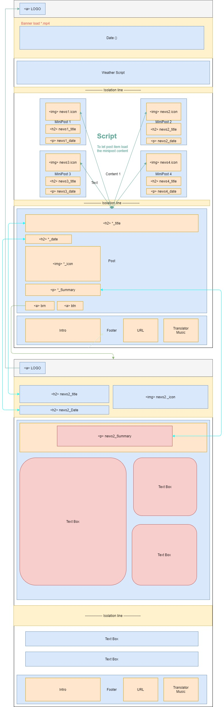

Report of the final project produced by
Arthur Choi #200469870
Arthur Choi #200469870
Salut!, bienvenue sur mon site, il s'appelle "AZ Times." (FN)
On my website, I tried to deliver some feature news that has attracted my interest. To do so, I worked on my site with constructed different documents and combined them
into appropriate places, with also the media information and more resources that necessary to convince the reader with sharing my opinions. In each of the articles, I would like to deliver "What has happened," "How is that affected
to us," evidence that support my statement, a resource to access the evidence, and possibly more multimedia that help the reader more understand the feature appearance.
I found the script (index_getexternalobject.js) on the home page (index.html), which let the articles' title, summary, icon, and published date will be synchronized with my other articles' articles' title, summary, an icon is pretty cool and successful in my website project. As a web designer, besides the website interface, a consider on the editor side for letting the website be edit in more efficiently. For an example of what I am expecting, my home pages that the place to appear the highlighted article will read the articles' title, the summary, the icon, and the published date from the article detail website (news1-4.html). In another word, for any information updated on my article website, there will be brief information updated on my home page simultaneously.
Although the features on the homepages script are awesome, I believed I can achieve better automation in the articles. I should more discover the method of database used in the whole website, such as reading in .txt file for the article content and images, so that the editor can create a thousand pages more based on the website structures.
Besides, improvement should be implemented on the attachment dimension. More skills are required in coding the CSS style for creating a more practical website for next time.
| Resources Used | Used features |
|---|---|
| PhotoShop Adobe 2020 | Photo Edit |
| Premiere Pro 2020 Adobe | Croping Donald Trimp dacing |
| draw.io | Sites map, Wireframes and mock-ups |
| Visual Studio | Propose of main coding the website. |
| HTML5UP http://www.nytimes.com/ @ajlkn CCA 3.0 license |
Reference of template (main.js, nav.js) to design the css file under CCA 3.0 license. |
| M.I.T. license javascript | Head files (browser.js v0.1-dev, breakpoints.js v0.1-dev, jQuery v3.2.1, util.js) for coding the javascript under M.I.T. license |
| President Donald Trump Dancing Trump ends his rally by dancing to YMCA https://www.youtube.com/watch?v=XXN8xxCxA5s |
banner dacing video in index.html |
| forecast7 weatherwidget-io |
weather widget on index.html |
| GoogleTranslator_Element http://translate.google.com/ |
Google Translator on whole websites |
| CORONAVIRUS TRACKER http://www.domo.com/covid19/daily-pulse/ |
numbers updated for the COVID 19 used in news1.html |
| http://openknowledge.worldbank.org/ | Reading of Global Economic Prospects posted at news1.html |
| cepr http://cepr.org/ |
Reading of CEPR PRESS Economics73.pdf post at news1.html |
| @nameshiv Twitter | images used in news2.html |
| Chen Po-wei General Osama Rabie |
Quote used in news2.html |
| BBC https://www.bbc.com/news/world-middle-east-565473830 |
Second hand infomation of the Suez Canal news |
| Tesla Model 3 http://www.tesla.com/en_ca/model3 |
Tesla Model 3 icon and sale price for news3.html |
| the UK gov. Department for Transport and Office for Zero Emission Vehicles http://www.gov.uk/government/news/plug-in-car-van-and-truck-grant-to-be-targeted-at-more-affordable-models-to-allow-more-people-to-make-the-switch |
infomation for news3.html |
| José Pontes ev-sales.blogspot http://ev-sales.blogspot.com/2021/03/europe-february-2021.html |
infomation for news3.html |
| Fred Lambert electrek http://electrek.co/2021/03/18/tesla-takes-hit-uk-best-selling-model-3-excluded-ev-incentive |
infomation for news3.html |
| NVIDIA Version: 470.05_gameready_64bit_international |
Driver developer posted in news4.html |
| Driver download from Maga http://mega.nz/file/9RACmT5I#rdXnyQFtTrop2KiybZq5m8zuIc_bxc-b_v_eQHe81I0 |
cloud base for driver downloadable link posted in news4.html |
| WccftechTVt https://www.youtube.com/embed/GZ8o07JsP2o |
youtuber explain the drivers work and posted in news4.html |
| Benchmark PC Tech https://www.youtube.com/watch?v=82Vr9IEkRFM |
graph used and posted in news4.html |
| GeForce 30 series http://en.wikipedia.org/wiki/GeForce_30_series |
$ of geforce 3060 used and posted in news4.html |
| Studio Yuraki https://www.youtube.com/watch?v=Uy1PNFrtSZE |
Song Nameless Story (Reincarnated in English) |
